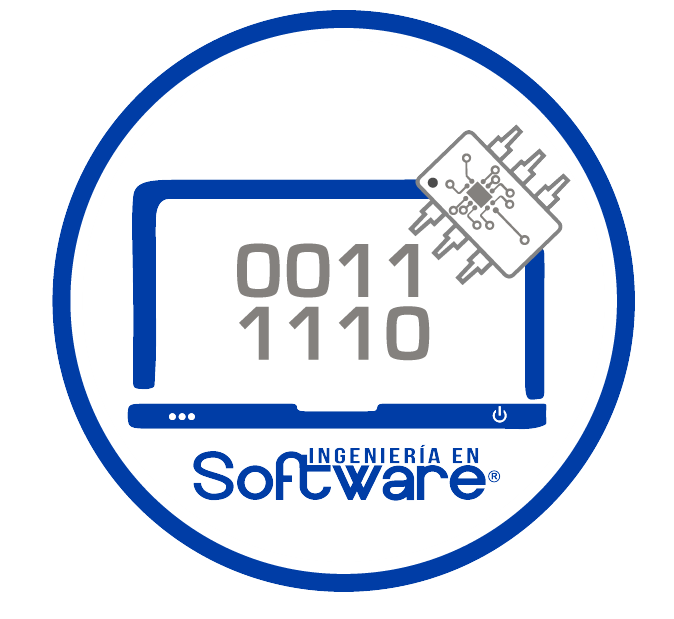

Home
(current)
Introducción
Página 2
Legislación informática
Conceptos de derechos de autor, privacidad y protección de datos
Página 3
Leyes nacionales e internacionales aplicables a los derechos de autor, privacidad y protección de datos
Trámites y requisitos de registro de obras ante la institución de derechos de autor
Página 4
Proceso de trámite de registro de obras ante la institución de derechos de autor
Proceso de elaboración de avisos de privacidad
Página 5
Ética informática y delitos informáticos
Conceptos de ética y delitos informáticos
Página 6
Características de los delitos informáticos tipificados en México
Aspectos legales relacionados con delitos informáticos en México
Proceso de elaboración de códigos de conducta y ética informática
Conclusiones y referencias

Universidad Politécnica de Tecámac.
Alumna: Natali Joselin Alemán Perez.
Docente: Dr. Néstor Apolo López Gonzalez.
Grupo: 2934IS.
Materia: Seguridad de la información.
Parcial III.
Fecha de entrega: 31 de Julio del 2024.